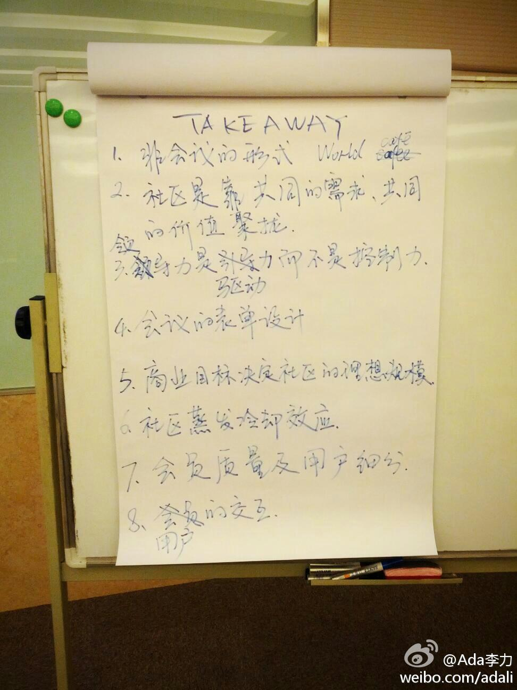

今天开车被人追尾。对方态度很好，下车就说她全责，我和她两人挪车后站马路边，打了半天的电话，冻得哆哆嗦嗦，拍了照片，报了案，互留了联系方式后各回各家。想到还要花时间定损修车，就觉还是麻烦。唯一欣慰的是那辆现代车撞得瘪了好大一块，我的车貌似就掉点漆。又替大众做了回广告。
今天下午有@shiningxyy 三个小时的内部培训“社区运营工作坊” ，也有外面的朋友参加。我只听了后半段。最后的总结takeaway 能看出大家在这一下午的收获重点。但可能，日后的实践中大家会有更多的体会。 
人在江湖飘，哪能不挨刀。记得这个萧洁云2004年任CA总经理才半年，就下课了。@李暄Brence @刘世胜VictorLiu@人称T客:惊闻SAP中国区总裁萧洁云被下课的声音，此前曾传出SAP年后将有重大的人士变动，据说高层有变动将频繁，本想求证一下此事真与，没想到昨晚又有兄弟说，萧洁云也在下课的名单中，不知道什么原因, 难道又是内部动荡？还是业绩不好，貌似萧在任才两年多吧。